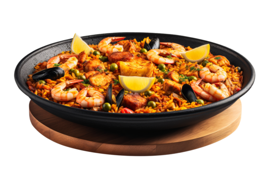

Spanish Paella

A very traditional Spanish paella, garnished with Spanish chorizo, chicken, squid, mussels, shrimp, and peas. A paella pan is recommended for making and serving this dish.
Information
- Prep Time: 45 mins
- Cook Time: 45 mins
- Total Time: 90 mins
- Servings: 6
Ingredients
- One chopped red bell pepper
- Four tablespoons of olive oil
- Four ounces of Spanish chorizo
- One chopped onion
- Two cloves of garlic
- Two boneless halves of chicken breast
- Twelve ounces of Arborio rice
- Five cups of chicken broth
- Half cup of white wine
- One sprig of fresh thyme
- One pinch of saffron
- Two squids
- Two seeded and chopped tomatoes
- Half cup of green peas
- Twelve peeled and deveined large shrimp
- One pound of cleaned and debearded mussels
- Quarter cup of chopped parsley
Steps
- Heat olive oil in paella pan over medium heat. Add onion, garlic, and pepper; cook and stir for a few minutes. Add chorizo sausage, diced chicken, and rice; cook for 2 to 3 minutes. Stir in 3 ½ cups stock, wine, thyme leaves, and saffron. Season with salt and pepper. Bring to the boil, and simmer for 15 minutes; stir occasionally.
- Taste the rice, and check to see if it is cooked. If the rice is uncooked, stir in ½ cup more stock. Continue cooking, stirring occasionally. Stir in additional stock if necessary: use up to 2 cups additional stock, 5 cups total. Cook until rice is done.
- Stir in squid, tomatoes, and peas. Cook for 2 minutes. Arrange prawns and mussels on top. Cover with foil, and leave for 3 to 5 minutes.
- Remove the foil, and scatter parsley over the food. Serve in paella pan, garnished with lemon wedges.
Nutrition
- 524 Calories
- 18g Fat
- 57g Carbs
- 29g Protein